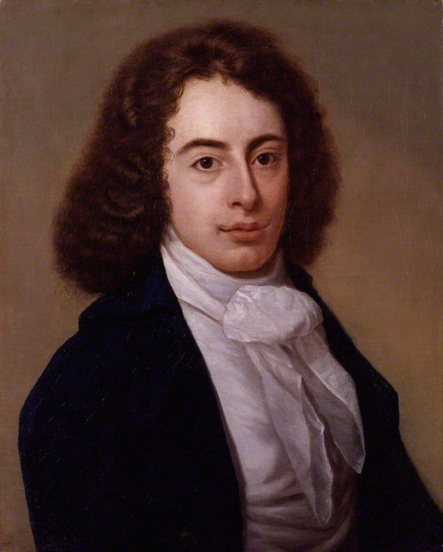

The "author" of this story until this assignment was my dad. It's actually quite interesting what I found about the other authors. Yes, plural! There have been many versions and authors of this story, but there are three that are most common.
The Three Versions:
The original author was a British writer and poet, Robert Southey. It was titled, "The Story of the Three Bears."
The second author was George Nicol. This version replaced the orignal old woman with a little girl named Goldilocks.
The version that most people know today, "Goldilocks and the Three Bears" replaced the original bear trio with mamma, papa and baby bear. Robert Southey is still listed as the main author.
See My favorite childhood story to read it!